<h1>MUSIC SCALLER</h1>
<nav class="circle">
  <button routerLink="/tuner" class="disabled">
    
    <span>Tuner</span>
  </button>
  <div class="separator"></div>
  <button routerLink="/about">
    
    <span>About</span>
  </button>
  <div class="separator"></div>
  <button routerLink="/stringed">
    
    <span>Stringed</span>
  </button>
  <div class="separator"></div>
  <button routerLink="/piano">
    
    <span>Keyboard</span>
  </button>
  <div class="separator"></div>
  <button routerLink="/winds" class="">
    
    <span>Wind</span>
  </button>
  <div class="separator"></div>
  <div class="inner-circle"></div>
</nav>

<app-home-sidebar></app-home-sidebar>

<footer>
  <span>Created by Bogdan Bida</span>
</footer>